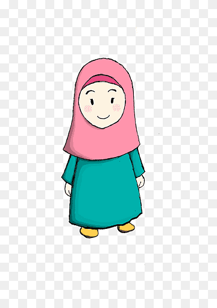
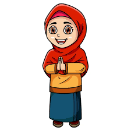

KETUA
Maulidia Nur Annisa

WALI KELAS
Anies Ramadhanita S,Pd.
WAKIL
Achmad Rafli A.
SEKRETARIS
Destia Aurellia P.
BENDAHARA
Lintang Kirana P.A.
Maulidia Nur Annisa
Anies Ramadhanita S,Pd.
Achmad Rafli A.
Destia Aurellia P.
Lintang Kirana P.A.